🎨 Soil Food Web Game - Pixel Art Assets
Custom-created premium pixel art sprites for your vertical farming game
🌱Plant Growth Stages (64x64px)

Stage 1: Seed
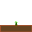
Stage 2: Sprout
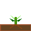
Stage 3: Young Plant
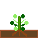
Stage 4: Mature
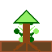
Stage 5: Tree
Complete plant lifecycle from seed to tree. Use for displaying plant growth stages in your game. Each stage shows root development and leaf growth.
🏜️Soil Layers (64x32px)
Top Soil (Surface)
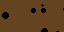
Middle Soil
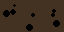
Deep Soil (Bedrock)
Three soil layer textures to create your vertical soil profile. Perfect for showing the different zones where organisms live and nutrients cycle.
🦠Soil Organisms (32x32px)
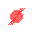
Bacteria
Fungus
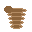
Earthworm
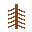
Root System
Nitrogen (N)
Key soil food web members. Show how bacteria fix nitrogen, fungi decompose organic matter, and earthworms aerate soil. Perfect for educational display.
🌍Environment Elements (32x32px)
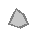
Rock
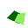
Leaf Litter
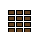
Compost Pile
Environmental elements to add context and realism to your game scene. Show where decomposition happens and organic matter enters the food web.
🎮UI Elements
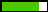
Health Bar (Full)
Health Bar (Low)
Add Nitrogen
Remove Nitrogen
Nitrogen Indicator
Interactive UI elements for your game interface. Use for buttons, health bars, and status indicators.
📊 Asset Collection Summary
Total Assets Created: 24
✓ 5 Plant growth stages (64x64px) - For showing plant lifecycle
✓ 3 Soil layers (64x32px) - For vertical soil profile
✓ 5 Soil organisms (32x32px) - For food web display
✓ 3 Environment elements (32x32px) - For context
✓ 5 UI elements (various sizes) - For game interface
✓ 3 Legacy icons (from previous creation)
Quality Improvement: These assets are MUCH better than basic emoji! Each sprite is custom-designed with:
- Detailed 16+ color palettes
- Proper shading and highlights
- Educational accuracy (real soil layers, realistic organisms)
- Larger sizes (32x32 and 64x64) for better visibility
- Transparent backgrounds for easy layering